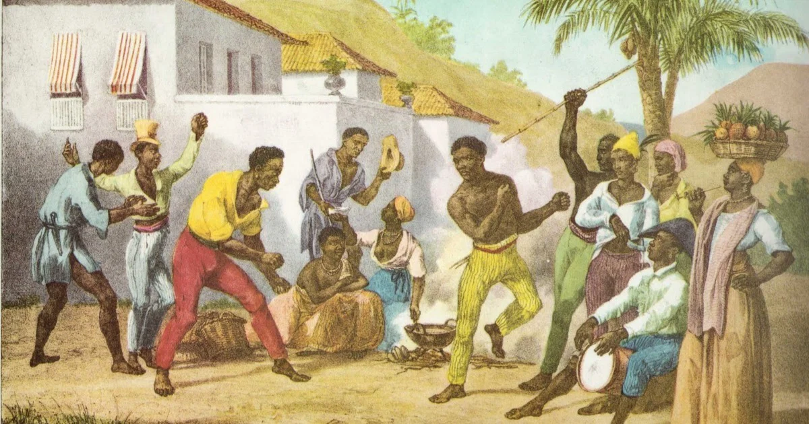

Muitas vezes, aprendemos que o Quilombo dos Palmares foi apenas um refúgio de guerra, mas as fontes indicam algo mais amplo:
Palmares pode ser entendido como um projeto civilizatório. Com diversos mocambos espalhados pela Serra da Barriga, o quilombo não era apenas um lugar de fuga, mas um espaço onde se produzia vida e liberdade.
Foi uma experiência baseada na ancestralidade africana, principalmente dos povos de Angola e do Congo, que trouxeram para o Brasil formas próprias de organização social e política.
A cultura palmarina apresentava forte participação feminina. Diferente da família patriarcal europeia, em Palmares há indícios de que as mulheres tinham papel importante na organização social.
Figuras como Aqualtune, associada à formação do quilombo, e Dandara, lembrada pela resistência a acordos que ameaçavam a liberdade, simbolizam essa presença feminina na organização da comunidade, na agricultura e na resistência.
Na economia, enquanto a colônia vivia da monocultura do açúcar, Palmares praticava a policultura, plantando milho, feijão e mandioca para o sustento coletivo. A terra funcionava como um bem comum, e a produção era distribuída entre as famílias.
Além disso, há registros do uso de metalurgia para a produção de ferramentas e armas, indicando um nível relevante de conhecimento técnico.
Por fim, é importante entender a ideia de paz quilombola. Palmares durou décadas porque não vivia apenas de conflitos, mas também da construção de laços comunitários e práticas culturais.
Essa herança se relaciona com o conceito de bem viver, que valoriza o coletivo, o respeito à natureza e a resistência. Palmares permanece como símbolo nas comunidades quilombolas que ainda lutam por território e identidade.
